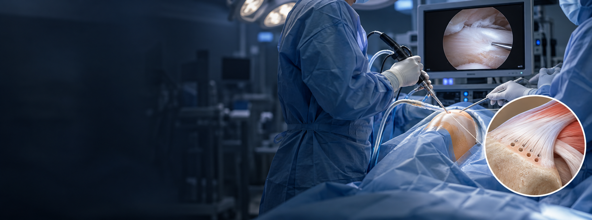

회전근개 미세 천공술이란?
회전근개가 부착되는 뼈에 작은 구멍을 내어 골수 성분의 유출을 유도하는 치료입니다. 힘줄과 뼈 사이의 치유 환경을 돕기 위한 보조적 방법으로 검토합니다.
파열의 크기와 힘줄 상태, 봉합술의 필요성을 함께 판단하며 미세 천공술만으로 모든 파열이 회복되는 것은 아닙니다.
회전근개가 붙는 뼈 부위에 미세한 구멍을 내어
골수 성분이 힘줄과 뼈의 접합부로 나오도록 하는 골수 자극술입니다.

회전근개가 부착되는 뼈에 작은 구멍을 내어 골수 성분의 유출을 유도하는 치료입니다. 힘줄과 뼈 사이의 치유 환경을 돕기 위한 보조적 방법으로 검토합니다.
파열의 크기와 힘줄 상태, 봉합술의 필요성을 함께 판단하며 미세 천공술만으로 모든 파열이 회복되는 것은 아닙니다.

파열의 범위와 힘줄의 질, 뼈 상태를 함께 살펴 골수 자극술의 적용 여부를 판단합니다.
봉합술 필요 여부와 병행 치료를 구분하고 이후 보호 및 재활 계획을 함께 정합니다.
영상검사와 진찰로 힘줄의 파열 범위와 부착부 상태를 확인합니다.
뼈의 미세 천공 위치와 범위를 검토하고 병행 치료를 계획합니다.
치료 부위를 보호하고 봉합 여부에 맞춰 재활 단계를 안내합니다.
파열과 뼈 부착부 상태에 맞춰 골수 자극술을 검토합니다.
봉합술 필요 여부와 예상되는 효과·한계를 함께 설명합니다.
보조기·어깨 운동은 파열·봉합 상태에 따른 보호·재활 지침을 따르세요.
통증이 줄어도 무거운 물건 들기·강한 운동은 임의로 시작하지 말고 회복 확인 후 단계적으로 진행하세요.